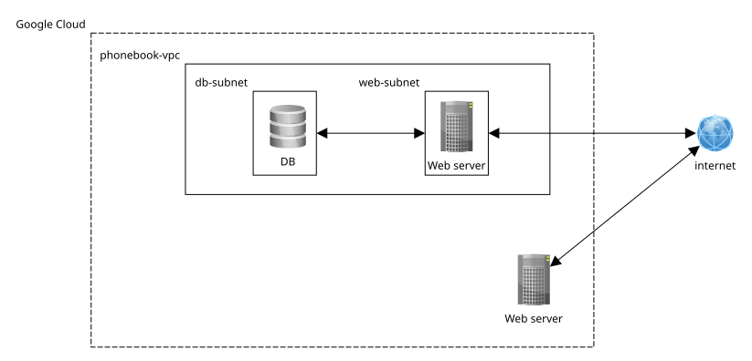

Sare Segurtasuna
Mikel Egaña Aranguren
CIDR (Classless Inter-Domain Routing)
IP helbideak esleitu eta bideratzea sareetan
Adibidea: 192.168.1.0/24
sarea: 192.168.1.0 - 192.168.1.255 / host edo azpisarea 192.168.1.1 - 192.168.1.254
Sare-maskara (router-ak sare batetik bestera): 255.255.255.0
Sarearen segmentazioa
Segmentazio fisikoa
Segmentazio logikoa VLAN bidez (OSI 2. geruza): gailuak funtzionalitatearen arabera taldekatu
Segmentazio logikoa azpisareen bidez (OSI 3. geruza): sarea azpisare txikiagoetan banatzea (IP helbideen barrutia)
VPC (Virtual Private Cloud)
- Isolamendua: sarea logikoki beste bezero edo erabiltzaile batzuetatik bereizita dago
- IP kontrola: IP helbide-barrutiak, azpisareak eta bide-taulak hautatzea
- Gateways: Interneteko gateway-ak eta NAT-ek sarrerako eta irteerako trafikoa kontrolatzen dute
VPC Google Cloud
Firewall arauen helburuak tag-en bidez definitzen dira (adib. http-server, https-server) CIDR blokeen ordez
VPC Google Cloud
